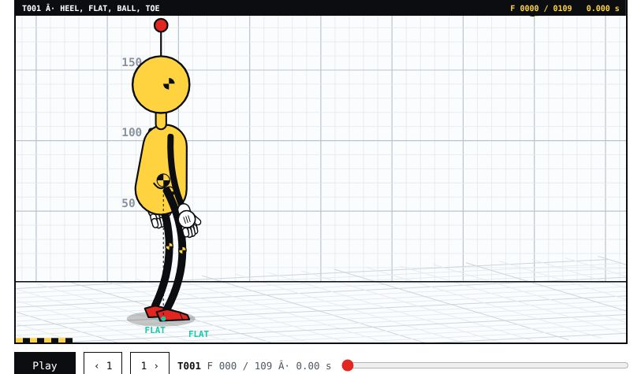

Home / Try it
Interactive
Try it
Five pages where the figures are computed in your browser. Scrub, filter, play, and load your own video.
 OpenDramaturgy Crash LabFilter 191 crash tests by instrument and play any of them
OpenDramaturgy Crash LabFilter 191 crash tests by instrument and play any of them OpenRange test and Video to BolasRun 54 range tests, or load a video of a person and get the same report
OpenRange test and Video to BolasRun 54 range tests, or load a video of a person and get the same report OpenThe PhysicalStep through 47 proofs and see which joints each one drives
OpenThe PhysicalStep through 47 proofs and see which joints each one drives OpenPencil testScrub every beat of three scenes, frame by frame
OpenPencil testScrub every beat of three scenes, frame by frame
OpenAll worldsOpen any of 159 worlds in the full rig